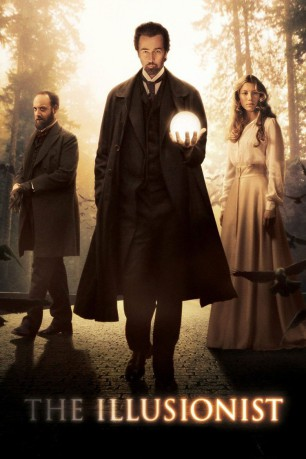

Auszeichnungen: für 1 Oscars nominiert
 gesehen am 20.11.2015
gesehen am 20.11.2015Alternativ: The Illusionist
Auszeichnungen: für 1 Oscars nominiert gesehen am 20.11.2015
 
 IMDB-Wertung: 7.6 / 10
IMDB-Wertung: 7.6 / 10  Metascore:
Metascore: 
Wien um 1900: Mit seinen fantastischen Vorstellungen macht sich der Illusionist Eisenheim zur lebenden Legende. Auf der Höhe seiner Kunst beschwört er den Geist der gerade ermordeten Herzogin Sophie. Doch bevor die Erscheinung den Namen ihres Mörders nennen kann, wird Eisenheim von Inspektor Uhl verhaftet. Was niemand ahnt: Die Herzogin war zwar die Verlobte von Kronprinz Leopold, aber auch die heimliche Liebe des Magiers. Wurde sie das Opfer des Machtkampfes zwischen dem Thronfolger und dem rätselhaften Meister der Täuschung? Nichts ist wie es scheint, die Grenzen zwischen Magie und Wirklichkeit verschwimmen.
Jahr: 2006
Dauer: 110 Minuten
FSK: 12
Land: USA Studio: Freestyle ReleasingTonspuren:
Untertitel: Deutsch,
Auflösung: 720p (1280x688) Größe: 4474 MB
Genre: Drama, Mystery, Liebe, Thriller
Regisseur: Neil Burger
Drehbuch: Neil Burger, Steven Millhauser
Soundtrack: Philip Glass
Darsteller:
 Edward Norton als Eisenheim
Edward Norton als Eisenheim Paul Giamatti als Inspector Uhl
Paul Giamatti als Inspector Uhl Jessica Biel als Sophie
Jessica Biel als Sophie Rufus Sewell als Crown Prince Leopold
Rufus Sewell als Crown Prince Leopold Eddie Marsan als Josef Fischer
Eddie Marsan als Josef Fischer Aaron Taylor-Johnson als Young Eisenheim
Aaron Taylor-Johnson als Young Eisenheim Karl Johnson als Doctor / Old Man
Karl Johnson als Doctor / Old Man Vincent Franklin als Loschek
Vincent Franklin als Loschek Erich Redman als Count Rainer
Erich Redman als Count Rainer Michael Carter als Von Thurnburg
Michael Carter als Von Thurnburg Brian Caspe als Eisenheim's Assistant
Brian Caspe als Eisenheim's Assistant Ellen Savaria als Mrs. Uhl
Ellen Savaria als Mrs. Uhl John Early als Man on Street
John Early als Man on Street James Babson als Young Father , uncredited
James Babson als Young Father , uncredited Tom Fisher als Willigut
Tom Fisher als Willigut Jan Nemejovský als Senior Officer
Jan Nemejovský als Senior OfficerDatei: X:\2006(G-M)\Illusionist - Nichts ist wie es scheint, The (2006, FSK12, 1280x688).mkv seit 11.06.2015
Festplatte: HD 2005(G-Z)-2006(A-Z)
 Es gibt insgesamt 48 Filme in der Gruppe '2006(G-M)'
Es gibt insgesamt 48 Filme in der Gruppe '2006(G-M)'